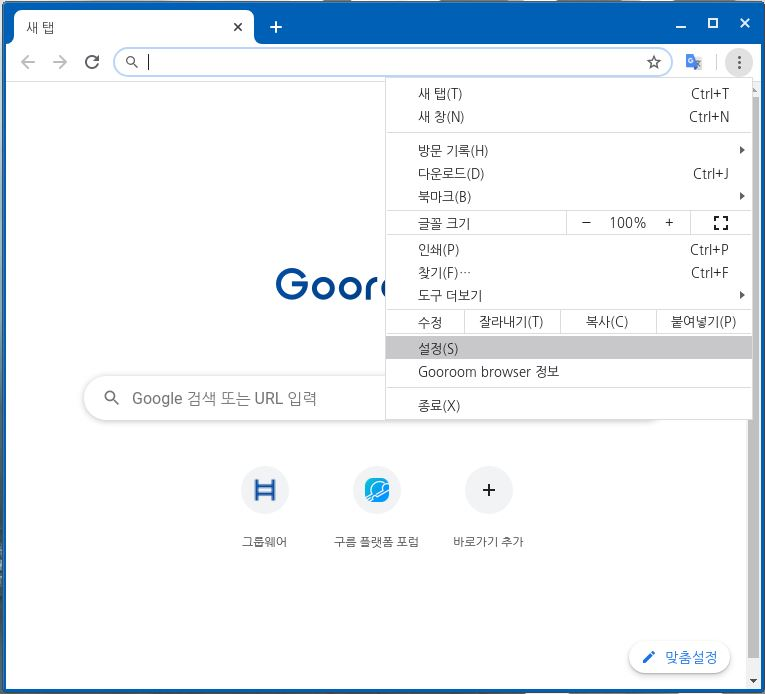
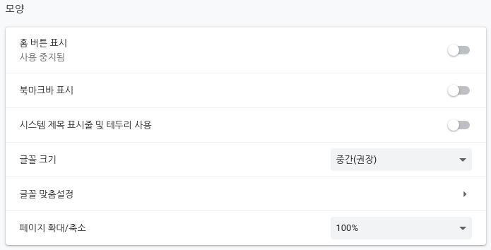
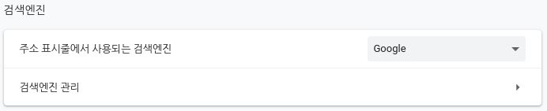
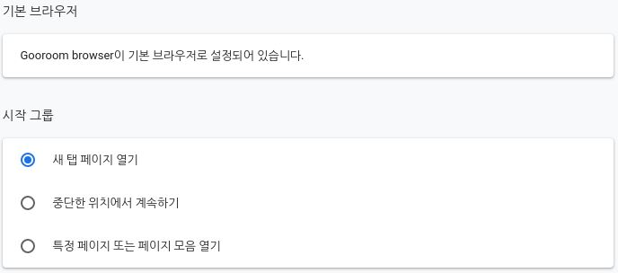
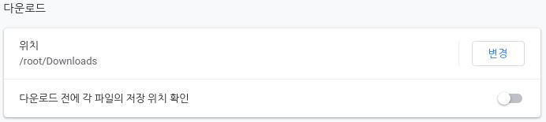

다음 방법을 통해 구름브라우저의 설정을 변경하거나 제어할 수 있습니다.






구름 브라우저를 실행하고 우측 상단의 메뉴 아이콘을 클릭하고 [설정]을 선택합니다.
홈 버튼 표시 : 좌측 상단 네비게이터에 홈 버튼을 추가합니다.
북마크바 표시 : 주소표시줄 하단에 북마크가 보이게 합니다.
시스템 제목 표시줄 및 테두리 사용 : GNOME 데스크톱 환경에서 제공하는 테두리를 사용합니다.
글꼴 크기 : 브라우저 안에서 사용되는 글꼴의 크기를 조절합니다.
글꼴 맞춤 설정 : 브라우저 안에서 사용되는 글꼴을 사용자가 원하는 대로 커스텀 할 수 있습니다.
페이지 확대/축소 : 페이지의 크기를 조절 할 수 있습니다.
북마크바 표시 : 주소표시줄 하단에 북마크가 보이게 합니다.
시스템 제목 표시줄 및 테두리 사용 : GNOME 데스크톱 환경에서 제공하는 테두리를 사용합니다.
글꼴 크기 : 브라우저 안에서 사용되는 글꼴의 크기를 조절합니다.
글꼴 맞춤 설정 : 브라우저 안에서 사용되는 글꼴을 사용자가 원하는 대로 커스텀 할 수 있습니다.
페이지 확대/축소 : 페이지의 크기를 조절 할 수 있습니다.
주소 표시줄에 검색했을 때 실행할 검색엔진을 설정합니다.
기본 브라우저 : 구름 OS의 기본 브라우저를 구름 브라우저로 설정합니다.
시작 그룹
1. 새 탭 페이지 열기 : 새 탭 페이지가 첫 화면에 나타납니다.
2. 중단한 위치에서 계속하기 : 마지막에 종료된 상태를 기억하고 첫 화면에 나타납니다.
2. 특정 페이지 또는 페이지 모음 열기 : 사용자가 설정한 페이지 리스트가 첫 화면에 나타납니다.
시작 그룹
1. 새 탭 페이지 열기 : 새 탭 페이지가 첫 화면에 나타납니다.
2. 중단한 위치에서 계속하기 : 마지막에 종료된 상태를 기억하고 첫 화면에 나타납니다.
2. 특정 페이지 또는 페이지 모음 열기 : 사용자가 설정한 페이지 리스트가 첫 화면에 나타납니다.
고급 설정에 있는 개인정보 및 보안 탭입니다.
인터넷 사용 기록 삭제 : 인터넷 사용기록을 시간/일/전체 단위로 삭제 할 수 있습니다.
쿠키 및 기타 사이트 데이터: 사이트에서 사용자의 로그인 상태를 유지하는 등 탐색 환경을 개선하기 위해 사용되는 쿠키를 설정할 수 있습니다.
보안: 세이프 브라우징(위험한 사이트로부터 보호) 및 기타 보안을 설정할 수 있습니다.
사이트 설정: 사이트에서 사용하고 표시할 수 있는 정보(위치, 카메라, 팝업 등)를 제어할 수 있습니다.
웹 소켓 사용 설정 : 웹 소켓을 허용할 지 선택할 수 있습니다.
웹 워커 사용 설정 : 웹 워커를 허용할 지 선택할 수 있습니다.
인터넷 사용 기록 삭제 : 인터넷 사용기록을 시간/일/전체 단위로 삭제 할 수 있습니다.
쿠키 및 기타 사이트 데이터: 사이트에서 사용자의 로그인 상태를 유지하는 등 탐색 환경을 개선하기 위해 사용되는 쿠키를 설정할 수 있습니다.
보안: 세이프 브라우징(위험한 사이트로부터 보호) 및 기타 보안을 설정할 수 있습니다.
사이트 설정: 사이트에서 사용하고 표시할 수 있는 정보(위치, 카메라, 팝업 등)를 제어할 수 있습니다.
웹 소켓 사용 설정 : 웹 소켓을 허용할 지 선택할 수 있습니다.
웹 워커 사용 설정 : 웹 워커를 허용할 지 선택할 수 있습니다.
다운로드 파일이 어디에 저장될 지 선택할 수 있습니다.